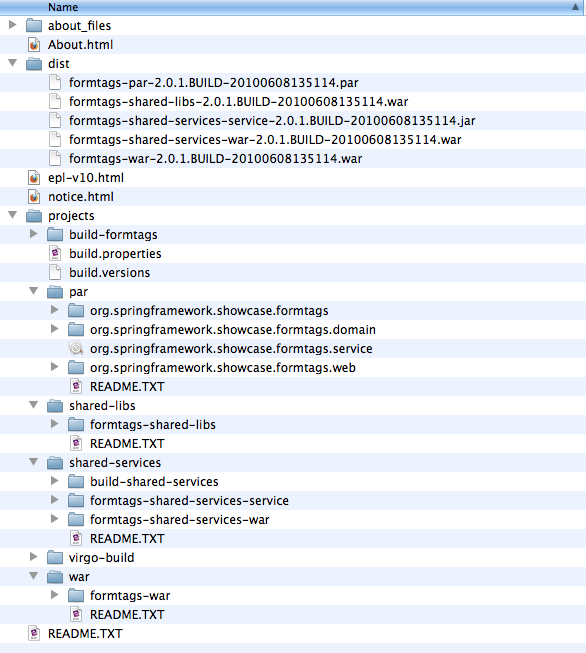
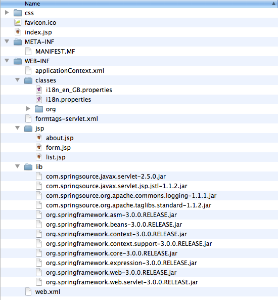
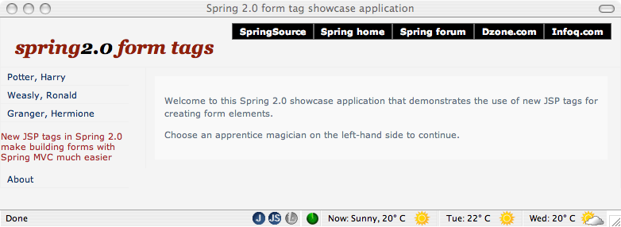
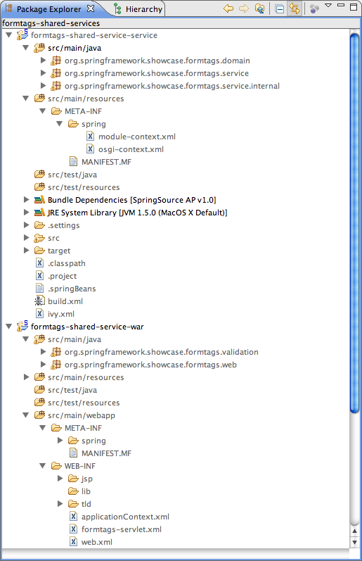
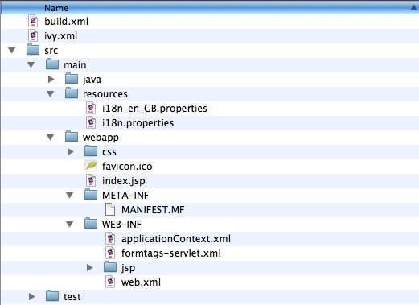
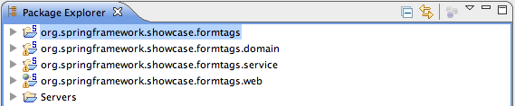
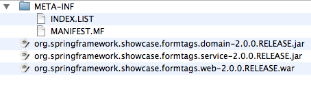

Case Study: Migrating the Form Tags Sample Application
Migrating Form Tags
In this chapter we will walk through the steps needed to migrate the Form Tags sample application from a standard Java EE WAR to a fully OSGi compliant Shared Services WAR within a PAR. The migration involves four packaging and deployment formats:
Each of these migration steps will produce a web application that can be deployed and run on the VTS.
After summarising the process, an example plan
is shown which is another way of packaging and deploying the application.
The following image displays the directory structure you should have
after installing the Form Tags sample. Note however that the release
tag will typically resemble 3.0.0.RELEASE.

The dist directory contains the distributables,
and the projects directory contains the source code and build scripts.
For simplicity, this chapter will focus on the distributables—which are built using Virgo-Build rather than on configuring a project in an IDE.
|
Tip
|
Pre-packaged distributables are made available in the |
Overview of the Form Tags Sample Application
The sample that we will be using is the Form Tags show case sample which was provided with Spring 2.0. The Form Tags application has been removed from the official Spring 2.5.x distributions; however, since it is relatively simple but still contains enough ingredients to demonstrate the various considerations required during a migration, we have chosen to use it for these examples.
The purpose of the Form Tags show case sample was to demonstrate how
the Spring specific
form:
tags, released
in Spring 2.0, make view development with JSPs and tag
libraries easier.
The Form Tags application consists of a single
UserService
which returns a list
of
Users
. Furthermore, the application demonstrates how to list, view,
and
edit
Users
in a simple Spring MVC based web application using JSP
and JSTL.
Form Tags WAR
We begin with a standard WAR deployment.
|
Note
|
The VTS supports the standard Java EE WAR packaging and deployment format as a first-class citizen, and there are many benefits to deploying a standard WAR file on the VTS including, but not limited to: tooling support, runtime error diagnostics, FFDC (first failure data capture), etc. In addition, support for standard WAR deployment provides an easy on-ramp for trying out the VTS with existing web applications. |
The following screen shot displays the directory structure of the
Form Tags application using the standard WAR format. As you can see,
there is no deviation from the standard structure and layout, and as
you would expect, all of the web application’s third-party
dependencies
(for example: Spring, Commons Logging) are packaged as
JARs in
WEB-INF/lib
.

To deploy this application, simply copy
dist/formtags-war-3.0.0.*.war
to
the
SERVER_HOME/pickup
directory for hot deployment.
You should then see the VTS produce console output similar to the following:
|
Note
|
The console output has been reformatted to fit this document. |
[2009-07-01 14:54:45.135] fs-watcher
<SPDE0048I> Processing 'CREATED' event for file 'formtags-war-3.0.0.RELEASE.war'.
[2009-07-01 14:54:45.797] fs-watcher
<SPDE0010I> Deployment of 'formtags-war-3.0.0.RELEASE.war' version '0' completed.
[2009-07-01 14:54:45.797] Thread-20
<SPWE0000I> Starting web bundle '/formtags-war-3.0.0.RELEASE'.
[2009-07-01 14:54:46.380] Thread-20
<SPWE0001I> Started web bundle '/formtags-war-3.0.0.RELEASE'.Navigate to
http://localhost:8080/
plus the web application context path,
which in the above case is
formtags-war-3.0.0.RELEASE
. Thus navigating to
http://localhost:8080/formtags-war-3.0.0.RELEASE
should render the sample application’s welcome page, as
displayed in the screen
shot below.
|
Tip
|
For WARs, the default web context path is the name of the WAR file
without the
|

Form Tags Shared Libraries WAR
As mentioned above, a standard WAR file typically packages of all its
required
dependencies in
WEB-INF/lib
. The servlet container will
then add all of the JARs in
WEB-INF/lib
to the application’s
classpath.
The first step of the migration towards benefiting from an OSGi container is to retrieve the dependencies from the VTS’s bundle repository at runtime. This can significantly reduce the time it takes to build and deploy the application. It also enables the enforcement of policies regarding the use of third-party libraries.
The way in which dependencies are declared in an OSGi environment is
via manifest headers in a bundle’s
/META-INF/MANIFEST.MF
.
As mentioned in [developing-applications], there are
three ways of expressing dependencies:
Import-Package,
Import-Bundle and
Import-Library.
The Form Tags application uses JSTL standard tag libraries.
Thus, you
need to choose a JSTL provider, for example the
Apache implementation
which comes with the VTS. To use the
Apache
implementation of JSTL, you need to express your dependency
as
outlined in the following manifest listing.
Because it is a single
bundle,
Import-Bundle
is
the simplest and therefore preferred manifest header to use.
The Form Tags application requires commons-logging and Spring.
It
would be very painful to have to list all the Spring packages one by
one.
Equally, considering the number of bundles that make up the
Spring framework, it would be verbose to list each bundle. Therefore
Import-Library
is the preferred approach
for expressing the dependency on the Spring
framework.
|
Tip
|
How do you determine the name of a library definition provided by the Virgo for Apache Tomcat? Use the EBR. |
Examine the
/META-INF/MANIFEST.MF
in
/dist/formtags-shared-libs-*.war:
Manifest-Version: 1.0
Ant-Version: Apache Ant 1.7.0
Created-By: 1.5.0_13-119 (Apple Inc.)
Bundle-ManifestVersion: 2
Bundle-SymbolicName: org.springframework.showcase.formtags-shared-libs
Import-Library: org.springframework.spring;version="[3.0.0,4.0.0)"
Import-Bundle: com.springsource.org.apache.taglibs.standard;version="1
.1.2"You can see the
Import-Library
and
Import-Bundle
directives that instruct the VTS to add the
appropriate package imports to the bundle
classpath used by this WAR file.
Deploying the shared libraries WAR onto the VTS should result in console output similar to the following:
|
Note
|
The console output has been reformatted to fit this document. |
[2009-07-01 15:00:14.953] fs-watcher
<SPDE0048I> Processing 'CREATED' event for file 'formtags-shared-libs-3.0.0.RELEASE.war'.
[2009-07-01 15:00:15.363] fs-watcher
<SPDE0010I> Deployment of 'org.springframework.showcase.formtags_shared_libs' version '2' completed.
[2009-07-01 15:00:15.364] Thread-20
<SPWE0000I> Starting web bundle '/formtags-shared-libs-3.0.0.RELEASE'.
[2009-07-01 15:00:15.816] Thread-20
<SPWE0001I> Started web bundle '/formtags-shared-libs-3.0.0.RELEASE'.Navigating to
http://localhost:8080/formtags-shared-libs-BUILDTAG
`
should render the welcome page. Note that for the pre-packaged
distributable,
the
`BUILDTAG
should be similar to
3.0.0.RELEASE
;
whereas, for a local build the
-BUILDTAG
may be completely
omitted. Please consult the console output,
web-based admin console, or log
to determine the exact context path
under which the web application has been deployed.
Form Tags Shared Services WAR
The next step in the migration is to deploy the services as a
separate
OSGi bundle which the WAR then references.
The Form Tags
sample has a single service
UserManager.
This scenario has two separate deployables, the
service
bundle and the WAR file.
The following image shows the two separate
source trees:

|
Note
|
Note that the WAR does not contain the
|
The Service Bundle
The responsibility of the first bundle (
formtags-shared-services-service
)
is to provide the API of the formtags service. This includes both
the
domain and the service API. In the same way that imports are
defined
in the
/META-INF/MANIFEST.MF
, so are exports.
The following is the
/META-INF/MANIFEST.MF
listing from the service bundle.
Manifest-Version: 1.0
Ant-Version: Apache Ant 1.7.0
Created-By: 1.5.0_13-119 (Apple Inc.)
Bundle-ManifestVersion: 2
Bundle-Name: FormTags Service (and implementation)
Bundle-SymbolicName: org.springframework.showcase.formtags.service-shared-services
Export-Package: org.springframework.showcase.formtags.service,org.spri
ngframework.showcase.formtags.domain
Import-Library: org.springframework.spring;version="[3.0.0,4.0.0)"The symbolic name of this bundle is
org.springframework.showcase.formtags.service-shared-services.
Note that the name of the bundle typically describes the package that the bundle primarily exports.
If you take a look at the repository/bundles/ext in the VTS
directory, you’ll see that
names are almost always indicative of the contents of the bundle.
For this example, however, we have also appended
“-shared-services”
in order to avoid possible clashes with other bundle symbolic
names.
You will see later that the PAR also contains a service
bundle.
|
Note
|
In OSGi, the combination of
|
As well as exporting types (i.e. the domain classes and service
API), the service bundle also publishes an implementation of the
UserManager
. The actual implementation is
StubUserManager
; however, that should remain an
implementation detail of this
bundle.
The fact that this bundle publishes a service is not captured in
the
/META-INF/MANIFEST.MF
, as it is a Gemini Blueprint concept.
The following image is of
src/main/resources/spring.

As you can see there are two Spring configuration files:
module-context.xml
and
osgi-context.xml.
|
Tip
|
These names are abitrary; however, they follow an informal
convention:
|
The following is a listing of
module-context.xml
.
<?xml version="1.0" encoding="UTF-8"?>
<beans xmlns="http://www.springframework.org/schema/beans"
xmlns:xsi="http://www.w3.org/2001/XMLSchema-instance"
xsi:schemaLocation="
http://www.springframework.org/schema/beans
http://www.springframework.org/schema/beans/spring-beans-2.5.xsd">
<bean id="userManager"
class="org.springframework.showcase.formtags.service.internal.StubUserManager"/>
</beans>As you can see, this simply defines a bean called
userManager
.
The following is a listing of
osgi-context.xml.
<?xml version="1.0" encoding="UTF-8"?>
<beans:beans
xmlns="http://www.springframework.org/schema/osgi"
xmlns:xsi="http://www.w3.org/2001/XMLSchema-instance"
xmlns:beans="http://www.springframework.org/schema/beans"
xsi:schemaLocation="http://www.springframework.org/schema/osgi
http://www.springframework.org/schema/osgi/spring-osgi.xsd
http://www.springframework.org/schema/beans
http://www.springframework.org/schema/beans/spring-beans.xsd">
<service ref="userManager"
interface="org.springframework.showcase.formtags.service.UserManager"/>
</beans:beans>This single bean definition exports the
userManager
defined in
module-context.xml
to the
OSGi service registry and makes it available under the public
`org.springframework.showcase.formtags.service.UserManager
`
API.
The service bundle should now be ready to deploy on the
VTS.
So copy
/dist/formtags-shared-services-services*
to the
SERVER_HOME/pickup
directory.
Output similar to the following should appear in the
VTS’s console:
|
Note
|
The console output has been reformatted to fit this document. |
[2009-07-01 15:05:03.511] fs-watcher
<SPDE0048I> Processing 'CREATED' event for file 'formtags-shared-services-service-2.0.0.RELEASE.jar'.
[2009-07-01 15:05:03.688] fs-watcher
<SPDE0010I> Deployment of 'org.springframework.showcase.formtags.service_shared_services' version '2.0.0.RELEASE' completed.Accessing the Service and Types from the WAR
The WAR file now needs to access the types and service exported
by
the service bundle. The following listing is the WAR’s
/META-INF/MANIFEST.MF
which imports the types
exported by the service bundle. The
Import-Bundle
statement has also been extended to import
org.springframework.osgi.core
,
which is necessary in order to load an OSGi-enabled
WebApplicationContext
.
Manifest-Version: 1.0
Ant-Version: Apache Ant 1.7.0
Created-By: 1.5.0_13-119 (Apple Inc.)
Bundle-ManifestVersion: 2
Bundle-SymbolicName: org.springframework.showcase.formtags.web-shared-
services
Import-Package: org.springframework.showcase.formtags.domain,org.sprin
gframework.showcase.formtags.service, org.eclipse.virgo.web.dm;version="[1.0,2.1)"
Import-Library: org.springframework.spring;version="[2.5.4,3.1.0)"
Import-Bundle: com.springsource.org.apache.taglibs.standard;version="1
.1.2",org.springframework.osgi.coreIn addition to importing the exported types of the service bundle,
the WAR must also obtain a reference to the
UserManager
published by the service bundle. The following image shows the
directory
structure of the Shared Services WAR.

As you can see in the above image, the Form Tags Shared Services
WAR’s
/WEB-INF/web.xml
directory contains a standard
web.xml
deployment descriptor,
applicationContext.xml
which defines the configuration
for the
root
WebApplicationContext
, and
formtags-servlet.xml
which defines the configuration specific to the
configured
formtags
DispatcherServlet
.
As is typical for Spring MVC based web applications, you configure a
ContextLoaderListener
in
web.xml
to load your root
WebApplicationContext
; however, to enable your
WebApplicationContext
to be able to reference services from the OSGi Service Registry,
you
must explicitly set the
contextClass
Servlet context parameter to the fully qualified
class name of a
ConfigurableWebApplicationContext
which is OSGi-enabled. When deploying
Shared Services WARs to the
Virgo for Apache Tomcat, you should use
org.eclipse.virgo.web.dm.ServerOsgiBundleXmlWebApplicationContext.
This will then enable the use of Gemini Blueprint’s <reference … />
within your root WebApplicationContext (i.e., in applicationContext.xml).
The following listing is an excerpt from /WEB-INF/web.xml.
<context-param>
<param-name>contextClass</param-name>
<param-value>org.eclipse.virgo.web.dm.ServerOsgiBundleXmlWebApplicationContext</param-value>
</context-param>
<listener>
<listener-class>org.springframework.web.context.ContextLoaderListener</listener-class>
</listener>The Form Tags Shared Services WAR contains a
/WEB-INF/applicationContext.xml
file which is the default configuration location used to create the
root
WebApplicationContext
for Spring MVC’s
ContextLoaderListener.
|
Note
|
As already mentioned, in the OSGi world, bundle configuration
takes
place in the root
|
The following is the listing of the WAR’s
/WEB-INF/applicationContext.xml.
<?xml version="1.0" encoding="UTF-8"?>
<beans:beans
xmlns="http://www.springframework.org/schema/osgi"
xmlns:xsi="http://www.w3.org/2001/XMLSchema-instance"
xmlns:beans="http://www.springframework.org/schema/beans"
xsi:schemaLocation="http://www.springframework.org/schema/osgi
http://www.springframework.org/schema/osgi/spring-osgi.xsd
http://www.springframework.org/schema/beans
http://www.springframework.org/schema/beans/spring-beans.xsd">
<reference id="userManager"
interface="org.springframework.showcase.formtags.service.UserManager"/>
</beans:beans>The single bean declaration is retrieving a service that implements the `org.springframework.showcase.formtags.service.UserManager ` API from the OSGi Service Registry.
|
Tip
|
You might have been expecting a reference to the service bundle, but that isn’t how OSGi works. OSGi provides a service registry, and this bean definition is accessing a service in that registry that meets the specified restriction (i.e. implements the specified interface). This leads to a very loosely coupled programming model: the WAR really doesn’t care where the implementation comes from. |
|
Tip
|
What happens if there is no service at runtime? What if there are multiple services that match the criteria? Gemini Blueprint provides a lot of configuration options, including whether or not the reference is mandatory , how long to wait for a service reference, etc. Please consult the Eclipse Gemini Blueprint Reference Guide for further information. |
One of the benefits of programming to interfaces is that you are decoupled from the actual implementation; Gemini Blueprint provides a proxy. This has enormous benefits including the ability to dynamically refresh individual bundles without cascading that refresh to unrelated bundles.
To deploy the WAR, copy
/dist/formtags-shared-services-war*
to the
SERVER_HOME/pickup
directory.
You should then see console output similar to the
following:
|
Note
|
The console output has been reformatted to fit this document. |
[2009-07-01 15:09:19.819] fs-watcher
<SPDE0048I> Processing 'CREATED' event for file 'formtags-shared-services-war-3.0.0.RELEASE.war'.
[2009-07-01 15:09:20.167] fs-watcher
<SPDE0010I> Deployment of 'org.springframework.showcase.formtags.web_shared_services' version '3' completed.
[2009-07-01 15:09:20.168] Thread-20
<SPWE0000I> Starting web bundle '/formtags-shared-services-war-3.0.0.RELEASE'.
[2009-07-01 15:09:20.647] Thread-20
<SPWE0001I> Started web bundle '/formtags-shared-services-war-3.0.0.RELEASE'.
----Navigating to the appropriate link should render the welcome page.
Form Tags PAR
The final step in the migration is that of a full blown OSGi application with web support. The Virgo for Apache Tomcat introduces a new packaging and deployment format: the PAR.
A PAR is a standard JAR with a “.par” file extension which contains all of the modules of your application (e.g., service, domain, and infrastructure bundles as well as a WAR for web applications) in a single deployment unit. Moreover, a PAR defines both a physical and logical application boundary.
The PAR sample is comprised of four directories, as shown below.

The
formtags-par
directory is a build project that
understands how to create the PAR
from its constituent bundles.
Granularity of the PAR
Achieving the appropriate level of granularity for your OSGi application is more of an art than a science. It helps to look at the different requirements:
| Requirement | Description |
|---|---|
Domain/Technical Layering |
Applications can be split either by domain (i.e., by use case or vertically ) or by their technical layers (i.e., horizontally ). Since the Form Tags application essentially has only a single use case, the bundles are split by technical layering (i.e., domain, service, and web). |
Refreshability |
A major benefit of OSGi is that of refreshability: if one bundle is changed, only bundles that have a dependency upon the exported types need to be refreshed. This has a high impact on development time costs as well as production costs. However, this can lead to lots of smaller, fine grained bundles. An example of this granularity would be to separate out the service API and implementation into two different bundles. This means that a change in the implementation wouldn’t require any other bundles to be refreshed. |
Ultimately the right level of granularity will depend upon your particular application and team.
Domain and Service Bundles
The service bundle is identical (except for the
Bundle-SymbolicName
) to that
in the shared-services variation of the sample.
The PAR has
also separated out the domain classes into their own bundle.
When
layering by technical considerations, it is again
somewhat of an
unofficial convention to have a
.domain
bundle.
Constructing the PAR
Finally we need to construct the PAR itself. The following are the contents of the exploded PAR.

You can see that the PAR itself doesn’t contain any resources or Java classes: it simply packages together a related set of bundles as a single, logical unit.
The PAR does however, contain its own
/META-INF/MANIFEST.MF.
Manifest-Version: 1.0
Application-SymbolicName: org.springframework.showcase.formtags-par
Application-Version: 3.0.0
Application-Name: FormTags Showcase Application (PAR)For more information on the contents of the PAR’s
/META-INF/MANIFEST.MF
, please consult [developing-applications].
You can now deploy the PAR on the VTS, for
example by copying
/dist/formtags-par*.par
to the VTS’s
pickup
directory.
You should then see console output similar to the
following:
|
Note
|
The console output has been reformatted to fit this document. |
[2009-07-01 15:13:43.306] fs-watcher
<SPDE0048I> Processing 'CREATED' event for file 'formtags-par-2.0.0.RELEASE.par'.
[2009-07-01 15:13:44.060] fs-watcher
<SPDE0010I> Deployment of 'formtags-par' version '2.0.0.RELEASE' completed.
[2009-07-01 15:13:44.068] Thread-20
<SPWE0000I> Starting web bundle '/formtags-par'.
[2009-07-01 15:13:45.212] Thread-20
<SPWE0001I> Started web bundle '/formtags-par'.Navigate to http://localhost:8080/formtags-par to see the welcome page.
|
Tip
|
Note that the web application’s context path is explicitly
defined via the
|
Summary of the Form Tags Migration
The Virgo for Apache Tomcat provides out-of-the-box support for deploying standard Java EE WAR files. In addition support for Shared Libraries and Shared Services WAR formats provides a logical migration path away from standard, monolithic WARs toward OSGi-enable Web applications. The PAR packaging and deployment format enables truly fine-grained, loosely-coupled, and efficient application development. In general, the migration steps presented in this chapter are fairly straightforward, but developers should set aside time for some up-front design of the bundles themselves.
It is recommended that you take another sample application or indeed your own small application and go through this migration process yourself. This will help you better understand the concepts and principles at work. In addition, it is highly recommended that you familiarize yourself with the extensive Eclipse IDE support provided by the Virgo Tools. See the Virgo Tools Guide for more on that.
Form Tags as a Plan
Plans (see [developing-applications-plans]) allow us to package and deploy the Form Tags application in a more flexible way. Instead of packaging all the bundles of the application into a single PAR file, each bundle can be placed in the repository and referred to in a plan.
The bundles to be placed in a repository in the chain (for example,
repository/usr) are:
org.springframework.showcase.formtags.domain-2.0.0.RELEASE.jar
org.springframework.showcase.formtags.service-2.0.0.RELEASE.jar
org.springframework.showcase.formtags.web-2.0.0.RELEASE.warwhich are just those files which were part of the PAR.
Here is the contents of a suitable plan file for the Form Tags example:
<?xml version="1.0" encoding="UTF-8"?>
<plan name="formtags.plan" version="2.0.0" scoped="true" atomic="true"
xmlns="http://www.eclipse.org/virgo/schema/plan"
xmlns:xsi="http://www.w3.org/2001/XMLSchema-instance"
xsi:schemaLocation="
http://www.eclipse.org/virgo/schema/plan
http://www.eclipse.org/virgo/schema/plan/eclipse-virgo-plan.xsd">
<artifact type="bundle" name="org.springframework.showcase.formtags.domain_par" version="[3.0,3.1)"/>
<artifact type="bundle" name="org.springframework.showcase.formtags.service_par" version="[3.0,3.1)"/>
<artifact type="bundle" name="org.springframework.showcase.formtags.web_par" version="[3.0,3.1)"/>
</plan>where we have chosen to use any of the artifacts in the version range [2.0,2.1).
This plan (as a file called, for example, formtags.plan)
can be deployed in any of the normal ways (for example, dropped in the pickup directory).
When the plan is deployed, the artifacts it references are installed from the repository and deployed in the order given in the plan file. Because this plan is scoped and atomic, the collection is given an application scope and is started and stopped as a single unit.